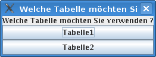
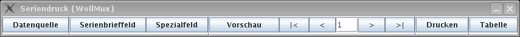
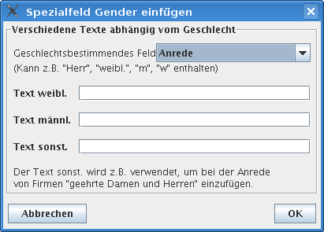
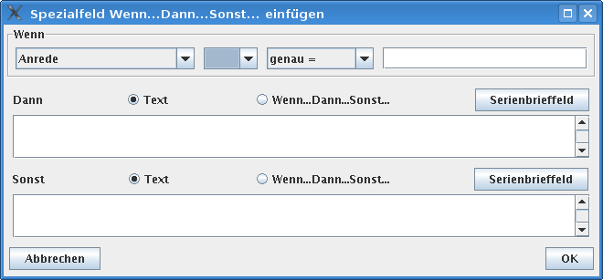
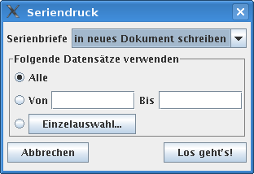
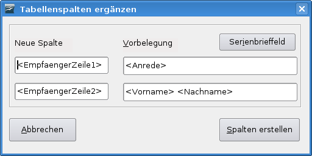

Auf dieser Seite werden die neuen Funktionen des WollMux-Serienbrief beschrieben.
ad hoc Seriendruck mit einer vorgegebenen Tabelle
Um einen ad hoc Serienbrief mit einer vorgegebenen Tabelle erstellen zu können, sind folgende Schritte notwendig:
Briefkopf öffnen
Über einen Klick auf "Externer Briefkopf" in der WollMux-Leiste wird ein neues Serienbriefdokument erzeugt.

Inhalte und Seriendruckfelder einfügen
Im soeben erzeugten Serienbriefdokument können die Textinhalte des Briefs frei eingegeben werden. Um ein Serienbrieffeld in das Dokument einzufügen, wird die Seriendruck-Leiste zu Hilfe genommen, die über Extras→Seriendruck (WollMux) gestartet wird:
Beim ersten Aufruf von 'Extras→Seriendruck (WollMux)' muss die Datenquelle, in diesem Beispiel eine bereits bestehende Datenquelle festgelegt werden. Dazu erscheint folgender Dialog:

Da die Datenquelle in diesem Beispiel unter /home/christoph.lutz/Datenquelle_Einladung.ods abgelegt ist, wird die Datenquelle über den Knopf "Datei ..." geöffnet. Es erscheint folgender Dateiauswahldialog:

Nach der Auswahl der Datei datenquelle.ods erscheint ein weiterer Dialog zur Auswahl des zu verwendenden Tabellenblattes.

Anmerkungen:
- Wenn die Beispieldatenquelle genau ein beschriebenes Tabellenblatt besitzt, dann wird dieses verwendet und der Dialog erscheint nicht. Die Beispieldatenquelle enthält aber mehrerer beschriebene Tabellenblätter und darum erscheint die Auswahl.
- Nach der Auswahl des Tabellenblattes kommt das zu bearbeitende Serienbriefdokument wieder in den Vordergrund.
- Die Auswahl der zu verwendenden Datenquelle ist nun abgeschlossen und muss nicht wiederholt werden. Die getroffenen Entscheidungen werden im Serienbriefdokument gespeichert, können aber nachträglich geändert werden.
Nun erscheint folgende Leiste, die frei auf der Arbeitsfläche positioniert werden kann und immer im Vordergrund ist, solange an dem Serienbriefdokument gearbeitet wird.
Dokument/Vorlage bearbeiten
Serienbriefe lassen sich jederzeit speichern und zu einem späteren Zeitpunkt wieder öffnen. Es kann dabei die bisherige Datenquelle, aber auch eine andere/neuere verwendet werden. Falls sich in dem Dokument bzw. der Vorlage noch Felder befinden, die in der Datenquelle nicht vorhanden sind, so lassen sich diese Felder mittels "Tabelle->Alle Felder anpassen" neuen Feldern zuweisen.
Serienbrief-Vorlage erstellen
Eine Serienbrief-Vorlage unterscheidet sich nur dadurch von einem ad hoc Serienbrief, dass bei der Erstellung eine Vorlage bzw. Michschvorlage mit der Dateiendung *.ott benutzt wird.
WollMux-Formular verwenden
Ein bereits bestehendes WollMux-Formular lässt sich ebenso zu einem Serienbrief abändern. Die Serienbrieffunktionalität lässt sich auch noch nachträglich via "Exras->Seriendruck (WollMux)" einfügen.
Seriendruckleiste
Anmerkung:
- Beim Umschalten auf ein anderes Fenster von OOo wird die Serienbriefleiste ausgeblendet.

Datenquelle
Über diesen Button lässt sich eine andere Datenquelle festlegen. Es wird der Dialog zur Datenquellenauswahl geöffnet, der auch bei neuen Serienbriefen angezeigt wird.
Folgende Möglichkeiten sind auswählbar:
- neue Datenquelle in Calc
- bestehende Calc-Datenquelle verwenden
- Verknüpfung zu einer Datenbank herstellen
Serienbrieffeld
Über das Menü "Serienbrieffeld" können die in der Datenquelle enthaltenen Serienbrieffelder in das Dokument eingefügt werden. Alle Serienbrieffelder sind in dem Menü aufgelistet.
Wenn in dem Menü mehr Serienbrieffelder sind als auf dem Bildschirm darstellbar, so lautet der letzte Menüpunkt "Weitere Felder..." und führt zu einem Dialog, in dem alle Felder in einer Listbox aufgelistet sind und so eingefügt werden können.
Spezialfeld
Über das Menü "Spezialfeld" können folgende Spezialfelder in das Dokument eingefügt werden:
Gender
Über den Button "Gender" können geschlechtsabhängige Bezeichnungen, anhand eines Seriebrieffeldes (i.d.R. Anrede mit dem Inhalt Frau/Herr - w/m - weibl./männl.) eingefügt werden.
Bsp: steht in der Datenquelle im Anredefeld Frau, so wird "Ansprechpartnerin" eingefügt. Steht im Anredefeld Herr, so ist das Ergebnis "Ansprechpartner".

Wenn...Dann...Sonst
Mit diesem Button können "Wenn...Dann...Sonst"-Felder eingefügt werden. Es ist auch möglich mehrere Bedingungsfelder in einander zu verschachteln. Über den Button "Serienbrieffeld" lassen sich in jedem Texteld weitere Serienbrieffelder einfügen.

Datensatznummer
-
Serienbriefnummer
-
Feld bearbeiten
Über diesen Button lassen sich zuvor markierte Spezialfelder bearbeiten.
Vorschau - <<Feldname>>
Nach Klick auf die Schaltfläche "Vorschau" kann über die Pfeilknöpfe geprüft werden, ob alle Datensätze zu den gewünschten Ergebnissen führen. Bei Formatierungsfehlern können die notwendigen Änderungen direkt im Dokument vorgenommen werden. Bei Fehlern in den Serienbriefdaten kann die zugehörige Datentabelle über "Tabelle bearbeiten" in den Vordergrund geholt werden. Danach können die Fehler direkt in der Datenquelle korriegiert werden.
Der Knopf "Vorschau" zeigt immer den Modus an, in den gewechselt werden soll. Ist die Seriendruck-Leiste bereits im Vorschau-Modus, so zeigt der Knopf "<<Feldname>>" an.
Über die Schaltfläche "Drucken" werden die Serienbriefe erstellt. Die Serienbriefe können dabei entweder direkt auf dem Drucker ausgegeben oder in ein Gesamtdokument geschrieben werden. Es erscheint der folgende Dialog:

Tabelle
Tabelle bearbeiten
Wechsel zur ausgewählten Datenquelle (funktioniert bei Datenbanken natürlich nicht)
Tabellenspalten ergänzen

Alle Felder anpassen
Der Menüpunkt "Alle Felder anpassen" erlaubt das schnelle Ersetzen von Formfeldern mit dem inserFormValue-Kommando durch Serienbrieffelder oder Freitext. Über die Schaltfläche "Serienbrieffeld" kann ein Serienbrieffeld aus der aktuellen Serienbriefdatenquelle ausgwählt und in das Textfeld "Neue Belegung" eingefügt werden. Alternativ kann in das Textfeld auch ein beliebiger Text eingetragen werden. Beim Anklicken der Schaltfläche "Felder anpassen" werden alle Felder, bei denen eine neue Belegung eingetragen wurde, durch ein Serienbrieffeld bzw. einen Text ersetzt.
Bei dieser Aktion werden die ursprünglichen Formfelder gelöscht und können daher nicht noch einmal angepasst werden.
Wenn keine Formfelder im Dokument vorhanden sind, bleibt der Menüpunkt ausgegraut.
Kategorie:Handbuch des WollMux